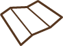

Switzerland's mountains are amazing. However, its "hills" are pretty awesome too. This map shows the hills around Zurich  in contour lines.
Overview
On the west side of Zurich Lake (called Zürichsee in German), the Albis chain stretches for about 19km. It was formed as the left moraine of the glacier bed which is now Lake Zurich. Being very near to the city of Zurich, the area is heavily visited, especially near its northern end, and includes a large number of restaurants along the summit (from Uetliberg to Mätteli), as well as hiking trails. On the east side , a range of peaks separate Greifensee from Zürichsee. The upper part of the mountain is mostly woodland and a popular recreational area with picnic sites. In winter season a cross-country skiing trail is a popular point of interest.
Uetliberg
Uetliberg (also known as Üetliberg) is a mountain in the Swiss plateau, part of the Albis chain, rising to 870 m (2,850 ft). The mountain offers an impressive panoramic view of the entire city of Zurich and the Lake of Zurich and it's a popular attraction for tourists. A train takes tourists from the main station in Zurich all the way to Utto Kulm, the summit of Uetliberg.
Felsenegg
At over 2,624 ft (800m) altitude, on Felsenegg you can enjoy breathtaking views over Lake Zurich and the distant mountains. A "Planet path" leads from Uetliberg to Felsenegg, which reflects the distances in the solar system. Every meter of the path corresponds to a distance of 1 million kilometers. The fascinating 2-hour hike takes you from the sun past the eight planets as far as the dwarf planet Pluto.
Zürichberg
The Zürichberg is a wooded hill rising to 679 m (2,228 feet), overlooking Lake Zurich and located immediately to the east of the city of Zurich. It is a picturesque location, and the lower western side of the hill is now part of the residential district of Zurich. The Zurich Zoo and FIFA's headquarters are located on the Zürichberg as well. The upper part of the hill is mostly woodland and a popular recreational area.